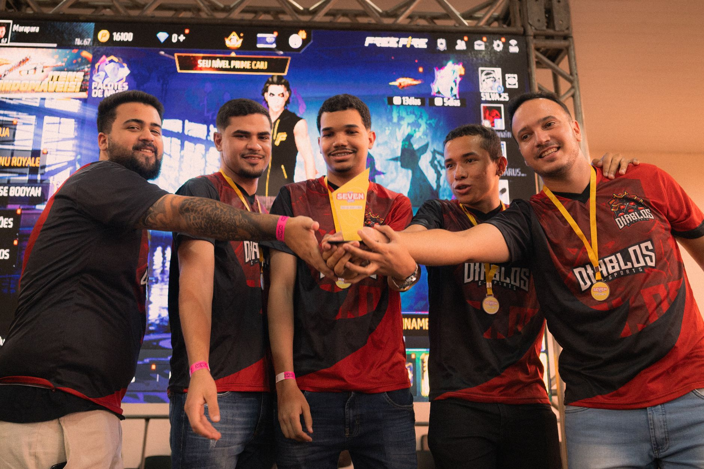

The moment everything changed
The atmosphere in the arena was heavy with the sense of an inevitable defeat. As the scoreboard flickered, showing a massive deficit for Maka's team, most analysts and spectators had already written them off. The odds were stacked against them, and the technical gap seemed insurmountable in the heat of the moment.
However, within the professional esports scene, statistics rarely tell the whole story. While the data suggested a landslide victory for the opposition, the internal chemistry and psychological resilience of the players were about to be tested in ways few had anticipated. It was not just a game of aim; it was a game of nerves.
Believing against all odds
In a recent interview following their miraculous turnaround, Maka opened up about the mental state of the squad during their lowest point. He described a feeling of extreme scarcity regarding their chances of success, yet he refused to let that scarcity dictate his performance on the server.
We had like 1% hope, and I truly believed we could pull this off if we just played our game.
This level of conviction is what separates elite competitors from the rest of the field. While most players would have succumbed to tilt or frustration, Maka's ability to maintain a positive outlook despite the overwhelming odds became the catalyst for their resurgence.
How the comeback unfolded
The comeback was not a result of luck, but rather a series of highly disciplined tactical adjustments. The team began to execute their utility usage with surgical precision, reclaiming map control that they had previously surrendered. Every round became a battle of attrition where they refused to blink.
As the momentum shifted, the opposing team began to show signs of hesitation. The psychological pressure of playing against a team that refuses to die is one of the hardest things to manage in professional gaming. By the time the final rounds arrived, the 1% hope had transformed into a roaring wave of confidence.
The impact on the professional scene
Maka's words have resonated far beyond his own fanbase. Analysts are now pointing to this match as a masterclass in mental fortitude. In a sport where milliseconds and micro-decisions determine the outcome, the ability to remain calm when the world expects you to fail is an invaluable asset.
This victory also sends a message to the rest of the competitive circuit. No lead is safe, and no deficit is too large to overcome if the players maintain their focus. It serves as a reminder that the human element of esports—the grit and the will to win—is just as important as the hardware or the software.
Looking toward the future of competition
As the season progresses, all eyes will be on Maka and his teammates to see if they can maintain this level of intensity. Can they replicate this miracle, or was it a once-in-a-lifetime alignment of stars? The upcoming tournaments will provide the answer.
While some teams are struggling with stability, others are finding new ways to thrive under pressure. For instance, the recent Astralis Roster Shakeup: cmtry to Miss Singapore Major highlights how quickly even the biggest names in the industry can face uncertainty. Staying ahead in the esports world requires constant adaptation and a mindset like Maka's.
See Also
If you enjoyed this Esports News article, check out Astralis Roster Shakeup: cmtry to Miss Singapore Major for more useful reading.